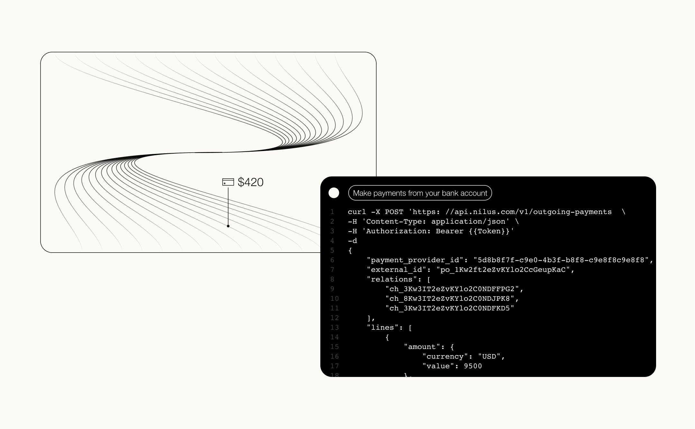
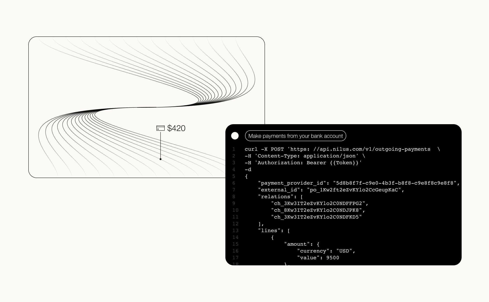

A 10-day brand sprint for Nilus.
Nilus makes money move. It’s a modular platform designed by finance specialists to support distinct payment flows. They asked us to create a brand that speaks of movement and modularity in an elegant and sophisticated manner.
Full website | nilus.com/
Client | Nilus
Art Director | Eden Vidal
Brand Designer, Illustrator | Daryna Dubyk
Animation | Thoughts In Motion


 
